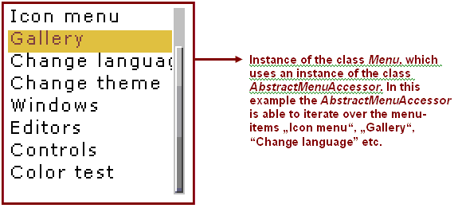
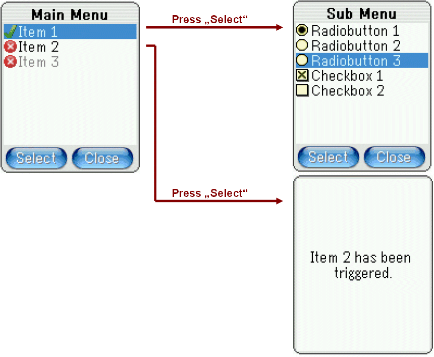

With APOXI-1.9.0 items have been introduced, which are represented by the class Item. Due the new classes ItemGrid, ItemTree and ItemMenu it is a lot easier now in APOXI to create listboxes and menus. Still obsolete classes might be used in older projects, thats why the usage of those classes are explained in this chapter.
The class Menu has been replaced by the class ItemMenu. It is recommended to convert old code to use the class ItemMenu, as it takes less time for doing this change and the adaption of the look and feel of menus gets a lot easier (see also chapter 5 for a description of the class ItemMenu):
The class Menu uses a menu-accessor for accessing and drawing the menu-items. A menu-accessor is described by the class AbstractMenuAccessor. It offers an interface for iterating over a variable number of menu-items, which may organized as a linear list of menu-items or as tree (e .g for hierarchical menus).
Example: a simple menu having a linear list of menu-items.

The class Menu is a control, which is responsible for:
The class AbstractMenuAccessor offers an interface for:
Example: A window should be created which contains a menu with the following structure:

After pressing "Item 1" a sub-menu showing some radiobuttons and checkboxes should be displayed. When pressing "Item 2" an alert should be display, which shows "Item 2 has been triggered". Item 3 should stay disabled and hence cannot be triggered.
The following code shows the implementation of this menu-structure. The code needed for the hierarchical-menu is noted in bold.
MyWindow.hpp
#include <ApoxiLib.hpp>
#include <AddOns/GuiMenuAccessors/SubMenuAction.hpp>
#include <AddOns/GuiMenuAccessors/TopMenu.hpp>
class MyWindow : public Window {
public:
void Init();
protected:
virtual BOOLEAN OnConfirm();
virtual BOOLEAN OnCancel();
virtual void OnActionExecuted(Action* action);
private:
TopLevelMenu m_menu;
// declarations for main-menu
SubMenuAction m_sub_menu;
Action m_action_1;
Action m_action_2;
// declarations for sub-menu
RadioButtonGroup m_rb_group;
RadioButtonAction m_rb_action_1;
RadioButtonAction m_rb_action_2;
RadioButtonAction m_rb_action_3;
CheckBoxAction m_cb_action_1;
CheckBoxAction m_cb_action_2;
ConfirmAction m_confirm_action;
CancelAction m_cancel_action;
};
MyWindow.cpp
#include "MyWindow.hpp"
#include <Config/Resources/confirm_icon.hpp>
#include <Config/Resources/cancel_icon.hpp>
void MyWindow::Init()
{
Window::Init();
// initialize sub-menu
m_rb_group.Init();
m_rb_action_1.Init(this, &m_rb_group, Tr(L"Radiobutton 1"), TRUE);
m_rb_action_2.Init(this, &m_rb_group, Tr(L"Radiobutton 2"));
m_rb_action_3.Init(this, &m_rb_group, Tr(L"Radiobutton 3"));
m_cb_action_1.Init(this, Tr(L"Checkbox 1"), TRUE, TRUE);
m_cb_action_2.Init(this, Tr(L"Checkbox 2"));
m_sub_menu.Init(this, Tr(L"Item 1"), &confirm_icon);
m_sub_menu.AddAction(&m_rb_action_1);
m_sub_menu.AddAction(&m_rb_action_2);
m_sub_menu.AddAction(&m_rb_action_3);
m_sub_menu.AddAction(&m_cb_action_1);
m_sub_menu.AddAction(&m_cb_action_2);
// initialize main-menu
m_action_1.Init(this, Tr(L"Item 2"), &cancel_icon);
m_action_2.Init(this, Tr(L"Item 3"), &cancel_icon);
m_action_2.SetEnabled(FALSE);
m_menu.Init(this, Tr(L"Main Menu"));
m_main_accessor.AddAction(&m_sub_menu);
m_main_accessor.AddAction(&m_action_1);
m_main_accessor.AddAction(&m_action_2);
// initialize softkeys
m_confirm_action.Init(this, Tr(L"Select"));
SetLeftSoftkey(&m_confirm_action);
m_cancel_action.Init(this, Tr(L"Close"));
SetRightSoftkey(&m_cancel_action);
}
BOOLEAN MyWindow::OnConfirm()
{
m_menu.Trigger();
return Base::OnConfirm();
}
BOOLEAN MyWindow::OnCancel()
{
AbstractMenuAccessor* accessor = m_menu.GetMenuAccessor();
ASSERT_DEBUG(accessor != 0);
if (accessor->IsRoot())
Close();
else
m_menu.Back();
return Base::OnCancel();
}
void MyWindow::OnActionExecuted(Action* action)
{
Base::OnActionExecuted(action);
if (action == &m_action_2) {
Alert alert(Tr(L"Item 2 has been triggered."));
alert.OpenModal();
}
// else if (action == ...)
}
In MyWindow::Init the actions of the sub-menu are initialized:
After the sub-menu the main-menu is initialized the same way:
The method OnConfirm is invoked, when the left softkey has been pressed. In this case the currently selected menu-item is triggered by invoking m_menu.Trigger().
The method OnCancel is invoked, when the right softkey has been pressed. The window should only get closed, if the currently displayed menu represents a root-menu. Otherwise the menu should go one menu-level back, which is done by m_menu.Back().
As explained in the chapter for actions, the method OnActionExecuted may be used to react when an action has been executed.
APOXI offers only the class AbstractListBox as a base class for listboxes. The application developer has been forced to derive its own listbox for being able to create an instance of the class. Especially the handling of the listbox-model together with the listbox-control is very tricky and thats why this approach has been replaced by class ItemGrid. It is recommended to replace all derived classes from AbstractListBox by the item-grid.
With APOXI-1.9.0 the methods Control::OnConfirm and Control::OnCancel got obsolete. Both methods are not needed anymore due providing the method Window::OnActionExecuted. A typical code which used those methods might look like this:
MyWindow.hpp
#include <ApoxiLib.hpp>
class MyWindow : public Window {
public:
void Init();
protected:
virtual BOOLEAN OnConfirm();
virtual BOOLEAN OnCancel();
private:
ConfirmAction m_confirm_action;
CancelAction m_cancel_action;
};
MyWindow.cpp
#include "MyWindow.hpp"
void MyWindow::Init()
{
Window::Init();
...
m_confirm_action.Init(this, Tr(L"Confirm"));
m_cancel_action.Init(this, Tr(L"Cancel"));
...
}
BOOLEAN MyWindow::OnConfirm()
{
// execute code A
return Base::OnConfirm();
}
BOOLEAN MyWindow::OnCancel()
{
// execute code B
return Base::OnCancel();
}
Replace this code the following way:
MyWindow.hpp
#include <ApoxiLib.hpp>
class MyWindow : public Window {
public:
void Init();
protected:
virtual void OnActionExecuted(Action* action);
private:
Action m_confirm_action;
Action m_cancel_action;
};
MyWindow.cpp
#include "MyWindow.hpp"
void MyWindow::Init()
{
Window::Init();
...
m_confirm_action.Init(this, Tr(L"Confirm"));
m_cancel_action.Init(this, Tr(L"Cancel"));
...
}
void MyWindow::OnActionExecuted(Action* action)
{
Window::OnActionExecuted(action);
if (action == &m_confirm_action)
// execute code A
else if (action == &m_cancel_action)
// execute code B
}
When embedding components inside a class, there are two different ways for the implementation:
class MyWindow : public Window { typedef Window Base; public: MyWindow(); virtual ~MyWindow(); private: LineEditor* m_editor; };MyWindow.cpp
#include "MyWindow.hpp"
MyWindow::MyWindow() : Base()
{
m_editor = new Editor(this, InputMapper::Numeric);
ASSERT_DEBUG(m_editor != 0);
}
MyWindow::~MyWindow()
{
delete m_editor;
m_editor = 0;
}
class MyWindow : public Window { typedef Window Base; public: void Init(); private: LineEditor m_editor; };MyWindow.cpp
#include "MyWindow.hpp"
void MyWindow::Init()
{
Base::Init();
m_editor.Init(this, InputMapper::Numeric);
}
The usual way in C++ is to declare component-pointers in the header-class and allocate the instances dynamically in the constructor. But with the current hardware-limitations of mobile phones this common way has some disadvantages:
To fit the requirements of the limited hardware, APOXI offers the method Init which is a replica of the constructor for statically declared objects. Hence an application may be declared statically, this application may contain a variable number of windows, which themselves contain a variable number of sub-controls. When declaring objects statically, the order of executing the constructors is not defined, which leads to race-conditions. By using Init this can be bypassed quite easy: after APOXI has been started up, Application::OnOpen() is invoked for each application, which initializes its windows with Init. The windows initialize their sub-controls with Init too and so on.
The benefit of declaring the object statically is that the maximum amount of memory an application needs is defined on compile-time. For sure most applications still may have the requirement to allocate data dynamically, but it is a lot easier to find out the peak-values needed for the size of the heap, when the size of the application is as static as possible. Note that APOXI does not force the application-programmer to use Init: every constructor offers a Init-replica and vice versa.
Because Init should behave the same as the constructor, it must invoked only once for an instance of the class. Do not use Init to reinitialize an instance of a class!
Regarding the current hardware-limitations it is recommended to use the approach with Init, even this may look strange in the first sight as experienced C++-programmer.
[ Previous: Image handling ]